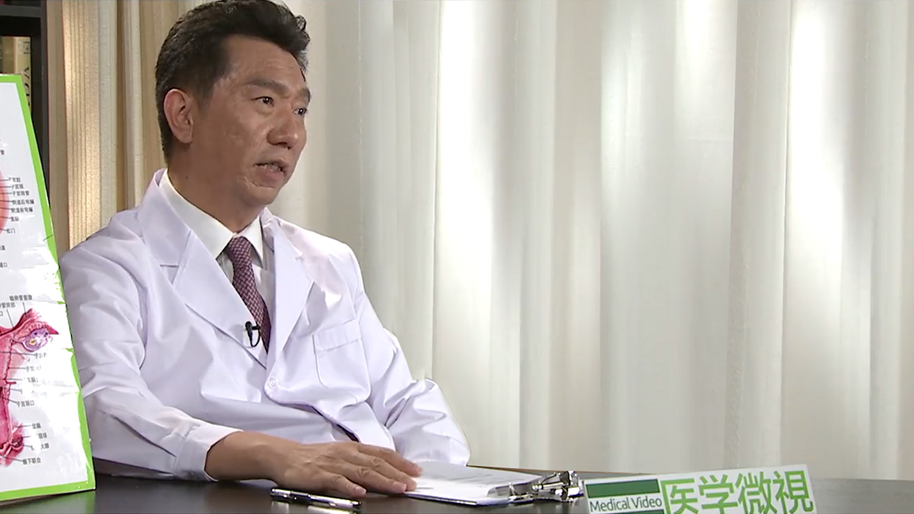

1.104 月经过多¶
田秦杰 主任医师¶

北京协和医院妇产科主任医师 教授 博士研究生导师；
美国宾夕法尼亚大学博士后；中华医学会妇产科分会妇科内分泌学组委员兼秘书；全国卫生产业企业管理协会妇幼健康产业分会副会长；全国卫生产业企业管理协会妇幼健康产业分会生殖外科与输卵管学组副组长；白求恩-妇科内分泌专项基金委员会副主任委员；北京市外国医师在京短期行医资格评审专家；国际妇科内分泌协会（ISGE，欧洲）和国际绝经协会（IMS）会员；《生殖医学杂志》副主编；《中国计划生育学杂志》副主任委员；《中国计划生育和妇产科》杂志常务编委；《实用妇产科杂志》《中国实用医学杂志》《临床药物治疗杂志》《中国妇产科网》编委；2008年北京第29届奥运会在奥运会历史上首次设立运动员性别鉴定实验室，担任性别检察官。
主要成就： 在国内外核心期刊发表论文100多篇，参与编写曹泽毅主编《中华妇产科学》第一、二、三版；作为副主编，与郎景和院士编写《青少年妇科学》《女性健康全书》《新婚必读全书》；作为副主编，编写《实用女性生殖内分泌学》和《绝经与健康》专著；作为“性发育异常的临床与基础研究”的主要参加者之一获得1996年度卫生部科技进步奖一等奖及1997年国家科技进步奖三等奖。
专业特长： 擅长妇科内分泌专业，包括性发育异常；性早熟；月经紊乱；多囊卵巢综合征；闭经；不育的诊断处理；宫腔镜、腹腔镜手术；更年期治疗；绝经后激素替代治疗等。
正常月经应该是什么样的？¶
我们说月经，是女性一个非常独特的一个现象，也是一个女性一个生殖内分泌很重要的一个信号，那么女孩子到了青春期以后，那么她在下丘脑垂体卵巢轴的这个成熟的激素的分泌下，子宫开始长大，然后每月随着卵泡的发育，她先开始分泌雌激素，这个雌激素就可以让子宫内膜增厚，让血管充盈，卵泡长到一定时候开始排卵，排卵是为了受精做准备，那么排卵以后，形成黄体，这黄体还可以继续分泌雌激素和孕激素，为妊娠做好准备。
那么如果没有受精的话，那么这个雌激素和孕激素水平开始下降，然后子宫内膜就会发生剥脱，随着这个还有一些出血，那么经阴道排出，就形成一个正常的一个月经，这就是月经形成这么一个机制。
用老百姓的话来讲，就是说我们来月经就像种田地一样，我们雌激素可以让内膜长起来，长起来以后，那么我们的孕激素就相当于一把刀，把这个内膜把它割掉排除出来，就形成一个月经，所以月经必须又有雌激素作用，还要有孕激素的影响，最后才能形成一个正常的月经。
一般谈正常月经的标准，我们从四个指标来谈：
一个就是月经的频率，就是多久来一次，我们正常的标准，应该是28天加减7天都算正常的。
那么第二个指标就是她的月经规律性，月经是否规律，那我们是指一年之内，两次月经之间变化，如果在一个礼拜之内，也就是7天之内都算规律的，超过7天以上，就叫月经不规律，甚至完全可以不来，比如说我们六个月不来月经的，我们叫闭经了。
那么第三个指标就是出血时间，多久能干净，我们说正常情况下，就是3到7天。
那么第四个指标，就是月经的量，那么量多量少，我们是有标准的，那么如果月经5毫升以内，就叫月经过少，80毫升以上叫月经过多，那我们中国老百姓很在意的月经的颜色，其实不是很重要的一个指标。
如何判断月经量是否过多？¶
我们讲月经过多，因为我们全世界定的标准都是80毫升，但80毫升到底有多少，其实大家很难来评定，所以我们现在都基本全世界都采用英国的一个叫NICE指南，那么这个指标，相对就比较主观一些，但是它非常用起来非常方便，我们是从三个指标，三个方面六个指标来给大家做诊断月经过多:
比如说包括她来的量多不多，什么时候叫量多不多呢，比如说你来月经的时候，如果有血块，这是一个指标。
或者出现贫血症状，乏力，老是觉得心慌，就是一个贫血，那么如果有这两个指标，任何一个也叫月经过多，这是第一个月经量的问题。
第二就是说，它对你这个生活的影响，那么比如说你担心月经量过多，会不会到时候要漏出来，所以你必须换个比如说来月经这几天，必须穿一个深颜色的裤子，那么这都提示有可能已经月经量过多。
还有一个标准，就是说你会不会觉得要来月经了，你不能去玩了，不能安排你的社会活动了，因为担心月经量多，会出现一些意外，那么这是第四个指标。
那么还有两个指标就是说，你就是说对你月经量对你生活的影响，比如说一个指标就是说，你要不要夜里起来去换个卫生巾，因为如果量多了，可能需要换一次。
还一个就是白天，你有没有两个小时就必须换一次，或者换卫生巾，或者两个小时必须换卫生棉条。
那么有这六个标准里面，有任何一个标准，都叫做月经过多，那么用这个指标来讲，就相对来讲，比较容易一些，就要问病人症状，她能答出来有任何一项阳性，或者答是，就可以诊断月经过多。
我们有研究，全世界已经发现，在一个女性里面，在一生时间里面，有三分之一的机会，会出现月经过多，就是会影响她的生活质量。
所以我们现在把月经过多一个定义，就是说这个女孩子来月经，一次月经，因为月经出血量过多，导致影响她的生活质量了，那么包括影响她的这个社会活动，甚至包括情感生活，甚至她的物质生活，都叫做月经过多。
那么她也可以单纯量多，也可能会出现其它一些相关症状，包括痛经，包括经前期综合征等等，那么这些都叫做月经过多合并，但主要还是以量多作为核心。
月经过多都是由哪些原因引起的？¶
那么月经过多其实原因很多，它只是一个异常子宫出血其中的一种，那我们根据国际妇产科学会，把月经过多，我们分为两大类，我们叫PALMCOIN，一个就是说子宫本身的问题，我们叫PALM，就是PALM，这个P就代表息肉，L就代表子宫腺肌症，这个L就代表leiomyoma，是个子宫肌瘤的问题，那么M就代表子宫内膜的恶变和不典型增生，那么这个是子宫本身的问题，我们可以通过B超，核磁，甚至取内膜活检，是可以明确诊断的。
那么还有一大类，我们叫COIN，这里面就是说，不是子宫本身的问题，如果是子宫，也是我们说分子水平的这个（原因），你没有办法通过B超，没有办法通过核磁，甚至通过活检能够明确诊断的。
那么第一个，我们首先是这个C，我们叫COIN，C就是一个全身凝血功能障碍，那么就是如果全身你得过白血病，或者再障性贫血，都会影响你出血，甚至我们有肾功能障碍的，它也会造成容易出血，最后很难止血，所以就会大出血，这是全身凝血功能，不是子宫本身的，虽然它表现为子宫出血量多，但不是子宫本身的问题。
那么O就是我们以前经常讲功能性子宫出血，就是卵巢本身的障碍，它不排卵，然后导致内膜不能发生相关的一些改变，那么就会出现月经量过多，这是我们的排卵障碍。
那么此外还有子宫内膜局部的异常，但那个局部异常，是分子水平的，它子宫内膜局部的一些凝血功能障碍，或者纤溶亢进。所谓凝血就是说，该止血止不住，另外还有可能就是，我们应该形成血栓，把血止住的同时，又有一个纤溶的过程，如果没有这个纤溶过程，那容易形成血栓，人就死掉了，那么必须有一个纤溶过程，但是它这个纤溶亢进了，血管还没止住呢，它把血管再通了，所以出血量就会多，所以叫纤溶亢进，这是子宫局部异常。
那么此外还有一些医源性的，跟我们治疗有关系的，比如我们放环有的引起大出血，放个避孕环，出血量会增多，还有一些吃一些药物，抗凝的药物，那么也会导致月经量过多，那么是跟我们治疗有关系的。
当然最后还有一大类，暂时找不到原因的，我们把这个当个垃圾筐，找不到原因的，或者没有办法分到前几大类，都放在这个里面，所以我们就是用英文一个词代表，就是说PALMCOIN，这个PALM什么意思呢，就这样是个手掌掌心，那么COIN发音就是一个硬币，那么手里拿着一个硬币，就把我们常见的这些异常子宫出血的原因都可以找到，那么所有这些原因都可以导致临床上会出现月经过多。
但是除了这些原因以外，其实还有一些是我们找不着的，比如说炎症，到底怎么造成月经量过多，我们也不知道，所以其实还有40%，还可能找不到原因，那可能还牵扯其它一些问题，比如甲状腺的问题，甚至肾上腺的问题，都可能造成我们月经过多，所以月经过多，我们看起来很简单，其实它的原因，需要一步一步去寻找原因。
月经过多对女性有什么样的危害？¶
我们强调月经过多的定义，就是它对女性生活质量有影响，包括她的物质的，比如说该上学不能上学，该上班不能上班，此外对你的社会活动会有影响，比如感觉这两天要来月经，而且量会很多，你不能去参加派对了，你不能去海边去游玩了，此外随着出血过多，可能会造成比如说比较脏乱，影响自己的情绪，会有很多这些相关的问题。
那么还有一些，因为月经过多会造成贫血，那么对于生活质量就会造成影响了，所以我们甚至还要做手术，切子宫，那么切子宫本身又会有一些并发症，除了花钱，对身体有很多不好的影响，包括遭受一些相关的痛苦，所以我们认为月经过多的核心，就是说它会影响一个女性的生活质量。
月经过多和月经量少哪个危害大？¶
我们觉得中国人其实很在意月经过少，这里面很重要一个观念，就是一个中国传统观念，那么就认为来月经是排毒的一个过程，其实哪儿来的毒，不就是激素的一个变化，所以激素的变化，它的内膜的排出，所以并没有什么排毒的作用，大家不要老觉得量少量多，量多点就舒服点，量少就没有排毒，会中毒，那这样男人早毒死了，所以不存在排毒这个问题。
那么我们觉得更多的问题就是说，月经过少可能在某些，比如说经常做流产的女孩子，我们觉得她量少，做完少数以后量少，她可能会影响下一步的怀孕，如果想要孩子的，可能会有些影响，那么有的女性到了四五十岁了，那么月经量少，有可能提示她是卵巢功能开始下降的一个指标。但是大多数情况下我们讲，只要能按时走，量不是特别少，就不叫月经过少。
所以我们诊断的标准，就是来一次月经，一个周期的月经，小于5毫升以下才叫月经过少，那5毫升有多少，其实一张卫生巾，日用卫生巾湿透了，就一定能达到5毫升以上，夜用型的14毫升了，所以我们是有办法能够统计的，所以如果你觉得月经量少，来跟医生商量，来了解，可能根本就不是月经量少，如果不少，也没有其它问题，就完全可以不处理。
但是月经过多，会对你生活质量有影响，会对你身体造成很多不好的一些危害，甚至需要治疗，甚至需要去做手术，那么所以我们认为月经过多，可能对一个女性来讲，对她的身体影响会更大一些，而不是月经过少。
月经过多什么情况下需要看医生？¶
我们讲月经过多，只要影响你生活质量了，那么我们定了六条，三个方面六个指标来给大家做诊断月经过多，比如说包括她来的量多不多，什么时候叫量多不多呢，比如说你来月经的时候，如果有血块，这是一个指标。或者出现贫血症状，乏力，老是觉得心慌，就是一个贫血，那么如果有这两个指标，任何一个都叫月经过多，这是第一个月经量的问题。
第二就是说，它对你这个生活的影响，那么比如说你担心月经量过多，会不会到时候要漏出来，所以你必须换个比如说来月经这几天，必须穿一个深颜色的裤子，那么这都提示有可能已经月经量过多。
还有一个标准，就是说你会不会觉得要来月经了，你不能去玩了，不能安排你的社会活动了，因为担心月经量多，会出现一些意外，那么这是第四个指标。
那么还有两个指标就是说，你就是说对你月经量对你生活的影响，比如说一个指标就是说，你要不要夜里起来去换个卫生巾，因为如果量多了，可能需要换一次。还一个就是白天，你有没有两个小时就必须换一次，或者换卫生巾，或者两个小时必须换卫生棉条。
那么有这六个标准里面，有任何一个标准，都叫做月经过多，这六条是全世界专家在一起讨论，相对比较简单的，那么只要其实有一条，那么符合了，就首先是月经过多，那么如果你容易月经过多，已经影响你生活了，影响生活质量，你就可以来找医生，医生就应该来帮助你。
月经过多千万别忽视！¶
我们讲因为月经过多影响你的生活质量了，那么当月经过多，已经造成你贫血了，应该你觉得不舒服了，有憋气、心慌，甚至头晕、发冷，就应该及时找医生来看。
那我们经常讲月经周期，应该什么时候来看，比如月经我们讲，它应该按时来按时走对吧，那么如果月经该来不来，比如我们正常说28天到30天应该来，那么到40、50天还不来，你就一定找医生来看了，因为如果不管，下一步也有可能沥沥拉拉出血，或者是出现大出血。
还有一个情况就是说，月经来了，但老不干净，这种情况我们说就5到7天，如果10天还不干净，你就应该找医生来看了。
所以简单来讲，就是说该来不来，该走不走，或者月经已经影响你生活质量了，就应该及时找医生来看，而不要等到大出血，或者是我们看到有些病人，出血3个月半年才来，那其实对你生活质量影响很大，不仅你天天很不方便，大热天可能要带卫生巾，然后还容易有感染，下一步还有可能会影响你的生育，所以有问题及时来找医生看，其实我们解决起来并不复杂。
月经过多需要做哪些检查项目？¶
那么一个病人来了，我们说最最基本的，在基层也可以做的检查治疗，我们要求有两个基本要求：
一个就是查个血常规，通过查血常规，我们知道你贫血到什么程度，有没有影响造成贫血。
第二，还有两项主要指标，就是看白细胞高不高，高，比正常稍微高一点，考虑有没有感染的风险，如果高很多，我们会考虑有没有白血病的风险，因为她出血量可能跟凝血功能障碍是有关系的。
那么另外的指标是看血小板，那么血小板如果是低很多，那考虑凝血功能障碍，我们叫特发性血小板减少，它也会造成月经量很大，所以这是一个最基本的检查。
第二个检查我们说做个B超，因为B超很方便，尤其在我们中国，基本乡镇医院都可以做，那么一个B超的主要目标，主要是希望看看排除有没有器质性改变，比如有没有长肌瘤，有没有盆腔长什么大的肿物，那么这对我们判定原因是很有帮助的。
那么其它的一些检查，比如说凝血功能检查，那我们或者有没有怀孕问题，我们必要的时候可以查个血查个尿，跟怀孕有关系的指标，比如查个HCG，或者怀疑她凝血功能障碍，比如从来月经的时候，每次来的量都很大，平时容易比如身上有瘀斑，磕了容易出血，我们才会做一些特殊的检查，不是要求每个人都做一些特殊检查，只有我们说最基本检查，就一个血常规和一个B超。
月经过多需要和哪些疾病区分开？¶
月经过多，它只是一个症状，更重要的我们是希望能找到它潜在的病因是什么，那么我们讲月经过多，这里面也有器质性的原因，也有所谓功能性原因。
那我们根据国际妇产科学会，把月经过多，我们分为两大类，我们叫PALMCOIN，一个就是说子宫本身的问题，我们叫PALM，就是PALM，这个P就代表息肉，L就代表子宫腺肌症，这个L就代表leiomyoma，是个子宫肌瘤的问题，那么M就代表子宫内膜的恶变和不典型增生，那么这个是子宫本身的问题，我们可以通过B超，核磁，甚至取内膜活检，是可以明确诊断的。
那么还有一大类，我们叫COIN，这里面就是说，不是子宫本身的问题，甚至子宫如果是子宫，也是我们说分子水平的这个（原因），你没有办法通过B超，没有办法通过核磁，甚至通过活检能够明确诊断的。
那么第一个，我们首先是这个C，我们叫COIN，C就是一个全身凝血功能障碍，那么就是如果全身你得过白血病，或者再障性贫血，都会影响你出血，甚至我们有肾功能障碍的，它也会造成容易出血，最后很难止血，所以就会大出血，这是全身凝血功能，不是子宫本身的，虽然它表现为子宫出血量多，但不是子宫本身的问题。
那么O就是我们以前经常讲功能性子宫出血，就是卵巢本身的障碍，它不排卵，然后导致内膜不能发生相关的一些改变，那么就会出现月经量过多，这是我们的排卵障碍。
那么此外还有子宫内膜局部的异常，但那个局部异常，是分子水平的，它子宫内膜局部的一些凝血功能障碍，或者纤溶亢进，所谓凝血就是说，该止血止不住，另外还有可能就是，我们应该形成血栓，把血止住的同时，又有一个纤溶的过程，如果没有这个纤溶过程，那容易形成血栓，人就死掉了，那么必须有一个纤溶过程，但是它这个纤溶亢进了，血管还没止住呢，它把血管再通了，所以出血量就会多，所以叫纤溶亢进，这是子宫局部异常。
那么此外还有一些医源性的，跟我们治疗有关系的，比如我们放环有的引起大出血，放个避孕环，出血量会增多，还有一些吃一些药物，抗凝的药物，那么也会导致月经量过多，那么是跟我们治疗有关系的。
当然最后还有一大类，暂时找不到原因的，所以重要的是我们能判定它什么原因造成的，我们会针对不同的原因，来采用不同治疗方法，那么找到病因以后，治疗效果才会好一些。
月经过多如何治疗？¶
那我们举个例子，我们从常见的原因，比如月经量过多是由子宫肌瘤引起的，那么我们分子宫肌瘤是浆膜层下的，肌壁间的和黏膜下，黏膜下的肌瘤它可以很小，但是因为位置不好，那么容易造成月经量过多，那么肌壁间，如果它长得很大了，整个宫腔面积增大了，它内膜的面积增大，它出血量也会多一些，那么这种也许要做手术，也许需要采用别的一些药物治
那么另外一个大家我们经常讲，所谓功能性子宫出血，现在我们不太主张用这个名词了，但是大家还在讲，那我们也可以讲，它的主要原因就是因为卵巢排卵不好，或者不排卵引起的，那我们临床把它分为有排卵功血和无排卵功血，最常见的比如说在青春期，在更年期，最常见的无排卵出血，那么这种出血，那么是因为排卵不好，缺乏孕激素，那么就会造成，子宫内膜一直在长，长了以后，如果你不把它脱落掉，就会造成出血，要么时间长，要么沥沥拉拉老不干净，就会出现时间比较久，所以你只有找到明确病因之后，那么你才知道下一步该怎么去做治疗，那么找到病因以后，治疗效果才会好。
我们一般讲还是说，从病因做治疗，但是做病因治疗的同时，你也是做一些对症治疗，比如她已经出现缺铁性贫血了，因为出血量比较大，出血时间比较久，已经确认出现贫血，那我们就是你缺什么补什么，比如缺铁造成的，那我们需要补充铁剂，需要加强营养，那么针对她一些相关的问题，我们包括要预防一些，因为严重贫血，或造成其他的一些问题，我们要做相关的治疗，那么这时候除了我们妇产科治疗以外，可能还要请一些内科做相关的治疗，来帮助病人改善全身状况，才能会得到一个比较好的效果。
口服避孕药治疗月经过多有哪些风险？¶
出血的原因，如果没有很多很器质性的问题，包括某些器质性的问题，如果能用这药物治疗，我们首选药物治疗，其次才是手术治疗。
那药物治疗里面，其实一个很重要的一个选择，就是口服避孕药，我们现在用的口服避孕药主要成分就是雌激素和孕激素，那么我们主要的避孕药的核心是靠孕激素，它活性比较强，它可以让子宫内膜变薄，变薄了以后，它就可以让内膜萎缩，萎缩了以后，完全没有内膜了，它就不出血了，所以从止血效果来讲，是不错的一个选择。
那我们现在讲，从青春期到育龄，甚至对某些更年期妇女，如果她没有血栓的风险，包括有没有经常吸烟，有没有家族史，有没有高血压，如果没有这个问题，我们是可以用的。
但是绝大多数我们是用在青春期或者育龄期的女孩子，是可以通过用药，一个可以止血，一个可以减少出血量，那对更年期妇女更慎重一些，因为这里面因为有炔雌醇成分，她容易出现血栓，所以我们相对用的少一点，但是在特殊情况下，也是可以用的，我们知道有短效避孕药，它的代谢非常非常快，可以很快就代谢掉了，所以长期来讲，只要没有明确的禁忌症，是可以用这个药来减少出血量的。
不用过于担心，但是不要自己随便吃，在医生指导下吃，他会判定你有没有问题，能不能吃，用多久，这个量怎么去调整，那么医生来帮你指导下，这个风险会更小，但是是一种很好的一个选择。
月经量多就是排毒多吗？¶
我们还是对月经过多治疗，我们首先还是希望大家培养一个观念，就是说要认识到它（月经量多）可能对你身体有不好的影响，不要觉得月经量多就排毒多，这个首先观念不对，那么要纠正这种错误的观念。
那么另外我们也是希望，我们各个医生吧，就是说碰到这样的病人来就诊了，我们医生观点有的观点也没有与时俱进，你该改变观点也要改变，那么如果病人来找你了，已经影响她生活质量了，影响她的工作学习了，我们也需要做主动去问，主动去做一些治疗。
那么从治疗的选择上来讲，我们有很多很多种办法，有药物的，有手术的，药物又分非激素的，有激素的，有没有生育要求，那我们下面选择很多很多种选择，我们会根据你的要求，那么会可以提供一些很好的，很简单的非常有效的办法，是完全可以解决这个问题的。
月经过多会影响性生活吗？¶
月经过多，它本身就会影响性生活，因为持续时间很久，尤其在出血期间，量多的时候，更不能在一起，那么我们是觉得通过治疗以后，它可以让你时间缩短，可以让你量减少，整个身体状态好了，精神状态好了，那么对你生活质量就会有明显的改进，是有帮助的。
那么这个药物，我们讲绝大多数是很短效的，那把血止住了，任务达成了，就把药停药就可以了，实际上可以改善妇女的生活质量，包括对老公的生活质量也是有改善的。
女的好了，男的不是也更好，家庭更好了，不是大家都好了。
月经过多影响生育吗？¶
月经过多，我们说子宫内膜恶变了，肯定下边会影响你怀孕的，那么肌腺症也会影响你怀孕。
所以我们说如果出现这症状了，作为患者来做的，就是积极到医院去就诊，医生帮你来寻找原因，而不是靠自己来诊断，我是得了什么病了，会不会影响呢，有些病是可以有影响，那么有的是经过治疗以后，就可以减少影响，甚至可以帮助你怀孕。
但是不同的原因，那么说选择治疗方法不一样的，所以对你的以后的结局，可能也不大一样，但是如果你认识到这个病，及时来就诊，可能最后的结局，比你到最后不得不来了，要好很多。